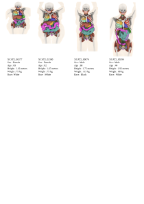

XCAT-3: A Comprehensive Library of Personalized Digital Twins Derived from CT Scans
Lavsen Dahal,
Mobina Ghojoghnejad,
Liesbeth Vancoillie,
Dhrubajyoti Ghosh,
Yubraj Bhandari,
David Kim,
Fong Chi Ho,
Fakrul Islam Tushar,
Sheng Luo,
Kyle J. Lafata,
Ehsan Abadi,
Ehsan Samei,
Joseph Y. Lo+,
W. Paul Segars+
Center for Virtual Imaging Trials · Carl E. Ravin Advanced Imaging Laboratories
Department of Radiology · Duke University School of Medicine · Durham, NC 27708
+Co-Senior Authors
Abstract
Virtual Imaging Trials (VIT) offer a cost-effective and scalable approach for evaluating medical imaging technologies.
Computational phantoms, which mimic real patient anatomy and physiology, play a central role in VIT. However, current
phantom libraries face limitations in sample size and diversity. This study presents a framework for creating realistic
computational phantoms using a suite of four deep learning segmentation models, with three forms of automated quality
control. The result is a release of over 2,500 computational phantoms with up to 140 structures, available in both
voxelized and surface mesh formats. Phantoms may be requested at
cvit.duke.edu/resources.
Interactive Anatomy Display
For best experience, use Chrome on a desktop or laptop. Refresh if the viewer does not load.
Phantom Diversity

Phantoms representing diverse demographics.
BibTeX
@article{dahal2025xcat,
title = {XCAT 3.0: A comprehensive library of personalized digital twins derived from CT scans},
author = {Dahal, Lavsen and Ghojoghnejad, Mobina and Vancoillie, Liesbeth and
Ghosh, Dhrubajyoti and Bhandari, Yubraj and Kim, David and Ho, Fong Chi and
Tushar, Fakrul Islam and Luo, Sheng and Lafata, Kyle J and others},
journal = {Medical Image Analysis},
pages = {103636},
year = {2025},
publisher = {Elsevier}
}